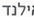
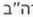

רשת בתי חב״ד
הקשר ממשיך – בכל מקום בעולם
ב״ה
המקום משתנה. הקשר ממשיך.
בית חב״ד בנגקוק
תאילנד

מאי 2023
נקודת התחלה
בית חב״ד ניו יורק
ארה״ב

היום
נקודת המשך
נתן כהן
תל אביב, ישראל
נמצא עכשיו בניו יורק
צפייה בפרופיל מלא
הקשר הקודם – מה שכבר קרה
עמד בקשר
עד יוני 2023
ביקש ברכה
לקראת נסיעה
לארה״ב
שיחה אישית
שוחח עם השליח
על הנחת תפילין
סעודת שבת
השתתף כמה
פעמים
שיעור גאולה
השתתף בשיעור
קבוע
המידע מוצג בהתאם להרשאות ולבחירת המשתמש.
המידע משותף רק לבית חב״ד החדש, לצורך המשך קשר מיטבי.
המשך קשר מוצע – בית חב״ד ניו יורק
מומלץ לפעולה
הצעה אישית
הנחת תפילין –
נשמח לעזור ולהדריך
הצטרפות לקבוצה
קבוצת צעירים
בניו יורק
הזמן לאירוע קרוב
שבת גיבוש צעירים
20 ביוני
צפה בפרופיל מלא
התקשר
שלח הודעה
רשת עולמית של שליחות
מאות בתי חב״ד – קשר אחד
אין קשר שנופל
בין הכיסאות
23,000+
שלוחים
5,300+
בתי חב״ד
112
מדינות
תפריט
מרכז השליח
מצא בית חב״ד קרוב
דוח לרבי
כל המסכים
עוד
החיים היהודיים שלי
הלימוד היומי
מכתב לרבי